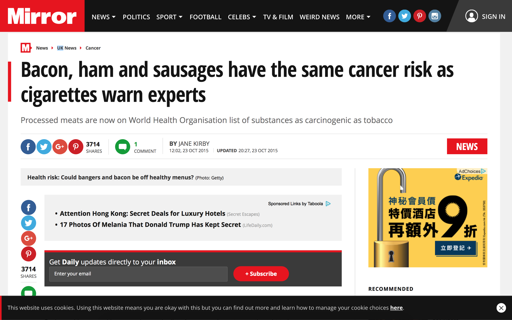
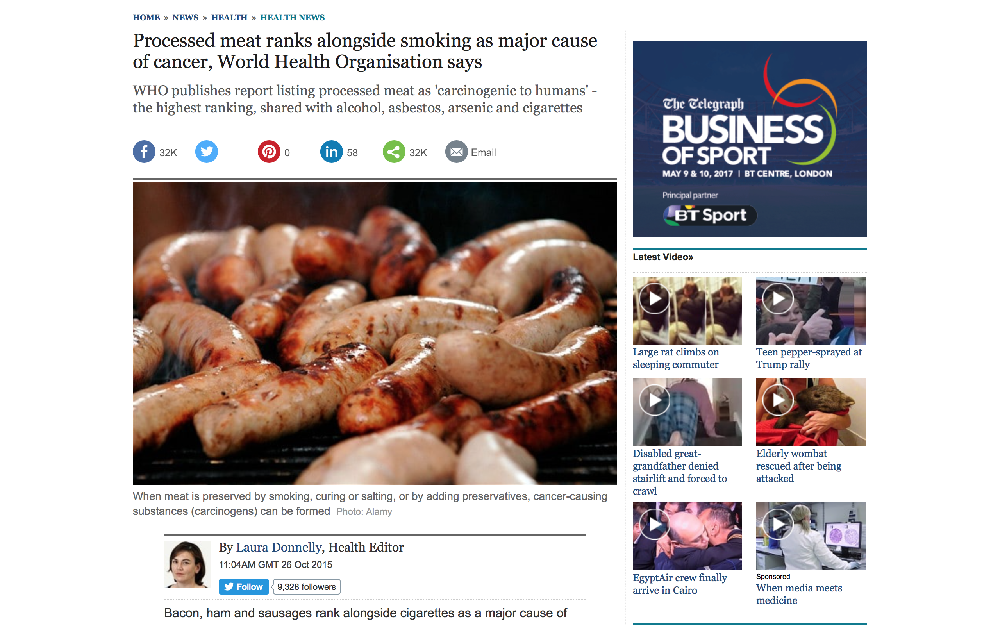

Statistic is an important element in news reporting. We use statistic to show validity of facts we report. However, a confusing use of statistic will lead to a distortion of facts. Below is an example of how media use confusing statistics to overemphasise the risk of having cancer if we eat too much processed meat.
What is the truth?
In a report of Cancer Research UK, it is said that colorectal is actually a rare cancer for normal people, as they will just have 5.6% chances of developing colorectal. However, for those who eat bacon most days, the chances rise to 6.6%.
According to WHO's International Agency for Research on Cancer (IAGR) panel of 22 experts, consuming processed meat is carcinogenic to human beings and so it belongs to Group 1 carcinogens.
| Substances | Radiations | Exposure circumstances |
|---|---|---|
| Chlorambucil | Ionizing radiation | Tobacco smoking |
| Ethylene oxide | Ultraviolet radiation | Ultraviolet-emitting tanning devices |
How the media overemphasis the risk with confusing statistics?
Some newspapers have claimed that processed meats are 'as big a cancer threat as smoking' and 'rank alongside smoking as cancer causes'.
1. Mirror (A national daily tabloid newspaper in UK):
 Mirror used "Bacon, ham and sausages have the same cancer risk as cigarettes warn experts" as title.2. The Telegraph (A national daily broadsheet newspaper in UK):
 Telegraph used "Processed meat ranks alongside smoking as major cause of cancer, World Health Organisation says" as title.What is wrong?
1. Carcinogens are not comparable
Even they all belong to Group 1 carcinogens, the amount of carcinogens needed to develop cancer is different. For example, having a piece of bacon may cause less harm to our body and contribute less to cancer development, comparing with having a cigarette.
2. The harm of bacon is overrated
Base on result from Cancer Research UK, people who eat bacon everyday will have 6.6% to trigger colorectal. However, normal people who don't eat bacon still get 5.6% to trigger the cancer. Therefore, mathematically, 100 people stop eating bacon, only 1 people will have a lower risk for trigger cancer. If the media overemphasise the 6.6% of chance, then it is overrating the harm of bacon.